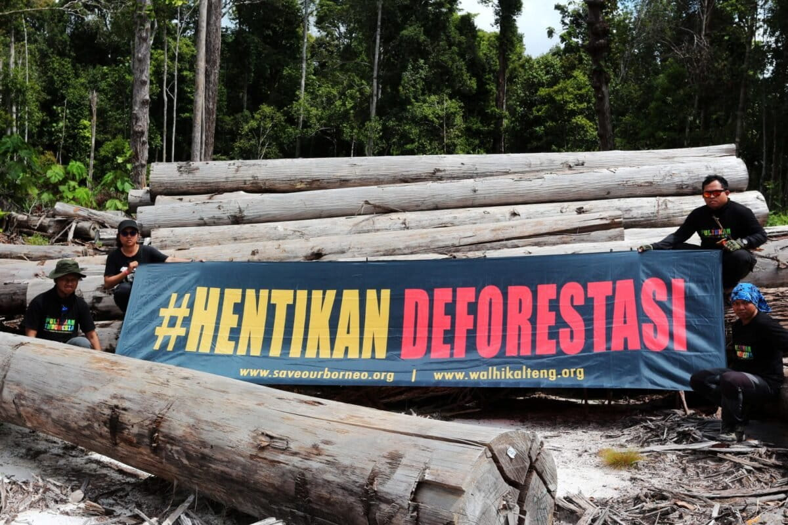
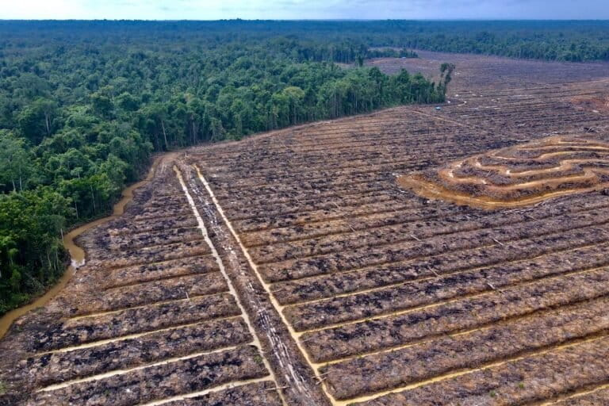
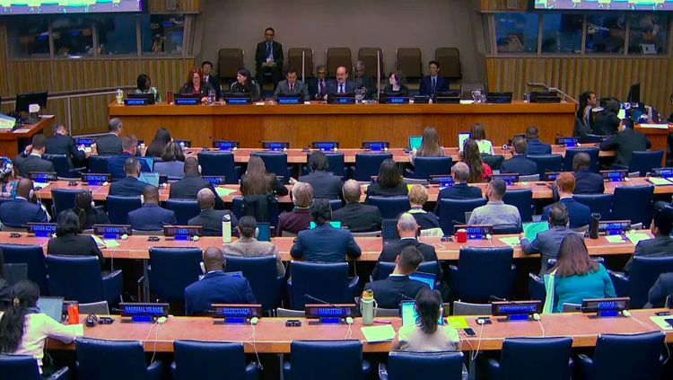

Latest NewsBerita Terbaru
Dispatches on deforestation, conservation, restoration, and the policies shaping Indonesia's forest future.
Laporan tentang deforestasi, konservasi, restorasi, dan kebijakan yang membentuk masa depan hutan Indonesia.

Deforestation in Kalimantan Triggers Disasters and Agrarian Conflicts
Deforestasi di Kalimantan Picu Bencana dan Konflik Agraria
The Kalimantan Regional Indonesian Environment Forum (Walhi) noted that over the past decade, around 33.59% of the region's ecological landscape has been damaged. With the loss of an average of 412,790 hectares of tropical forest every year.
Wahana Lingkungan Hidup Indonesia (Walhi) Regional Kalimantan mencatat, sepanjang satu dekade terakhir, sekitar 33,59% lanskap ekologis wilayah ini mengalami kerusakan. Dengan kehilangan rata-rata 412.790 hektar hutan tropis setiap tahunnya.
Read NewsBaca Berita
When Papuan Indigenous Peoples Protest the Release of Nearly 500 Thousand Hectares of Forest Area
Masyarakat Adat Papua Protes Pelepasan Hampir 500 Ribu Hektar Kawasan Hutan
The area of forest area that has been converted into other use...
Luas kawasan hutan yang berubah jadi alokasi penggunaan lain...

APHI Urges Forestry Businesses to Optimize New Carbon Regulation
APHI Dorong Pelaku Usaha Kehutanan Optimalkan Permenhut No. 6 Tahun 2026
The Indonesian Forest Concessionaires Association (APHI) encourages forestry businesses to optimize Minister of Environment and Forestry Regulation No. 6 of 2026 to accelerate carbon projects and national carbon trading in PBPH areas.
Asosiasi Pengusaha Hutan Indonesia (APHI) mendorong para pelaku usaha kehutanan untuk mengoptimalkan Permenhut Nomor 6 Tahun 2026 guna mempercepat pengembangan proyek dan perdagangan karbon nasional di area Perizinan Berusaha Pemanfaatan Hutan (PBPH).

Indonesia Commits to Restore 12 Million Hectares of Critical Land
Indonesia Komitmen Restorasi 12 Juta Hektare Lahan Kritis
The Indonesian government reaffirms its commitment to sustainable forest and land rehabilitation. This was stated by the Minister of Forestry at the 21st Session of the United Nations Forum on Forests (UNFF21) in New York, with a focus on restoring 12 million hectares of critical land.
Pemerintah Indonesia kembali menegaskan komitmennya untuk rehabilitasi dan restorasi hutan serta lahan secara berkelanjutan. Hal ini disampaikan Menteri Kehutanan dalam Sidang ke-21 Forum Kehutanan PBB (UNFF21) di New York, dengan prioritas restorasi 12 juta hektare lahan kritis.
No articles found
Artikel tidak ditemukan
Try a different keyword or clear your filters.
Coba kata kunci lain atau hapus filter Anda.